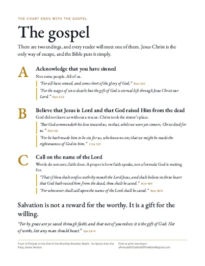
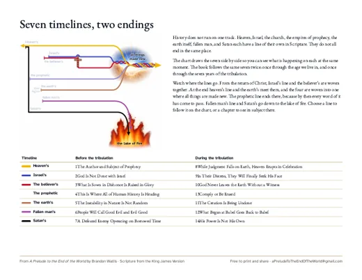
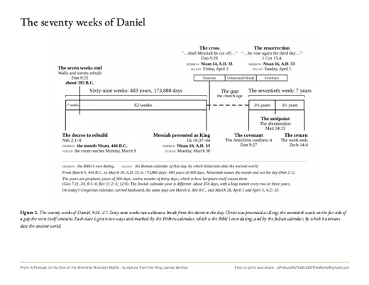

Free resources
For a Bible study, a Sunday school class, or to hand to someone. Everything on this page is free to read, to print, and to share.
Free to print
One page each. Print as many as you like.

The gospelOne page: the three steps, with their verses.
The seven timelinesThe seven lines at a glance, with the chapters for each.
The seventy weeksFigure 1 from the book, with every date.
From the back of the book
The appendices and glossaries of A Prelude to the End of the World, in full. Read them here, or print them for a class.
- The Order of Events Appendix A
The whole road in one list, from the church age to the new creation, with the chapter that treats each step.
- A Note on Method Appendix B
What “dispensational” means, six lines of evidence for reading prophecy literally, and the four ways Revelation is read.
- Tables for Reference Appendix C
The judgments, the resurrections, the views of the rapture and the millennium, the seven blessings of Revelation, and the schools of interpretation.
- Hard Questions Appendix D
Children at the rapture, those who never heard, salvation after the rapture, the mark of the beast, and more.
- Where Each Passage Is Treated Appendix E
Arrive with an open Bible: Revelation, Daniel, and the other passages readers look up most, each pointed to its chapter.
- Seven Marks of a False Teacher Appendix F
Seven things to examine in any teacher, drawn from the New Testament.
- Glossary of Terms and of KJV Words Glossaries
The terms the book uses, defined plainly, and the old words of the King James text with their modern meaning.
- All of them together
Every appendix and both glossaries in one file, ready to print.
Also free on this site
- Chapter 4, free to read: Daniel’s statue and the seventy weeks.
- The gospel: the three steps, and what happens when you believe.
- Questions: plain answers, and where the book stands.
- The timeline, with a guided tour and an index of the chart.
- Check it yourself: how to test any teacher against the Scriptures.